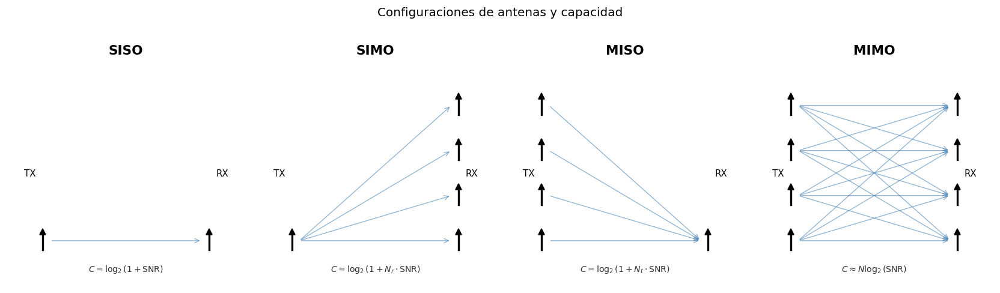
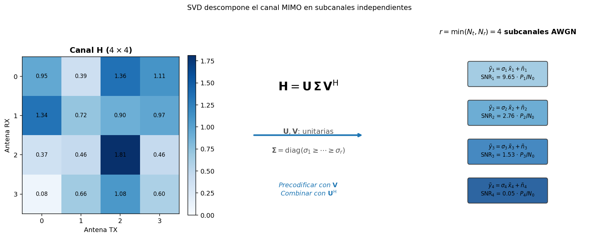
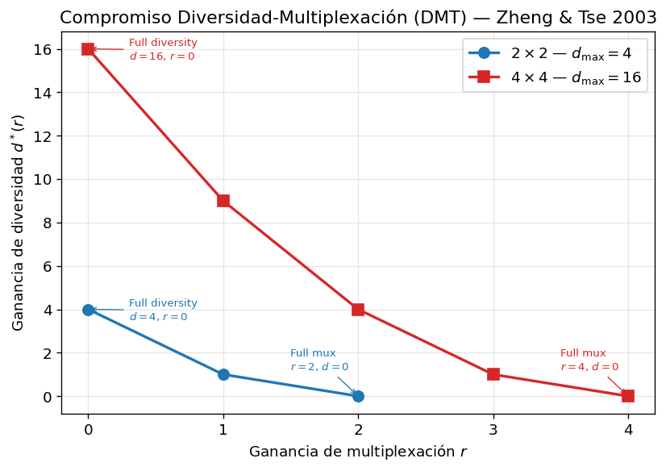
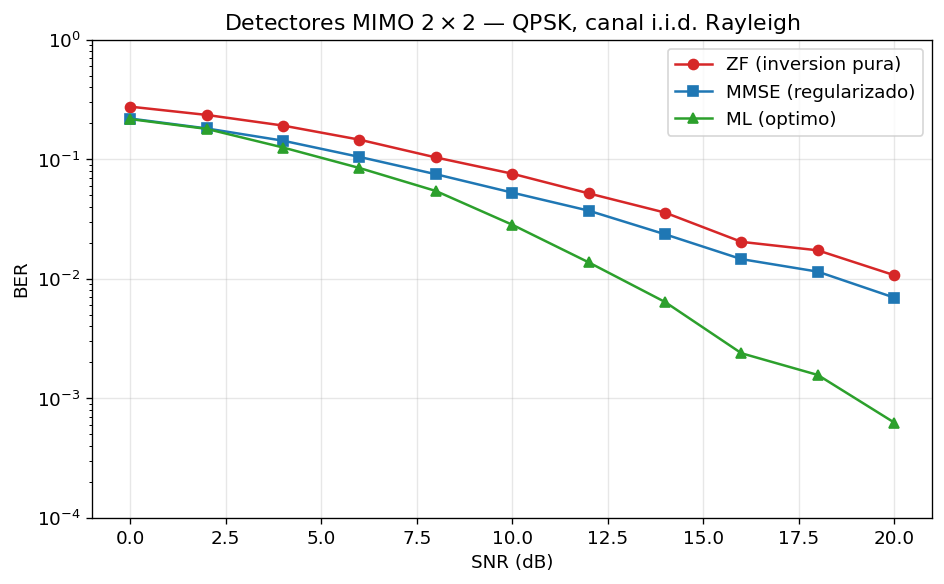
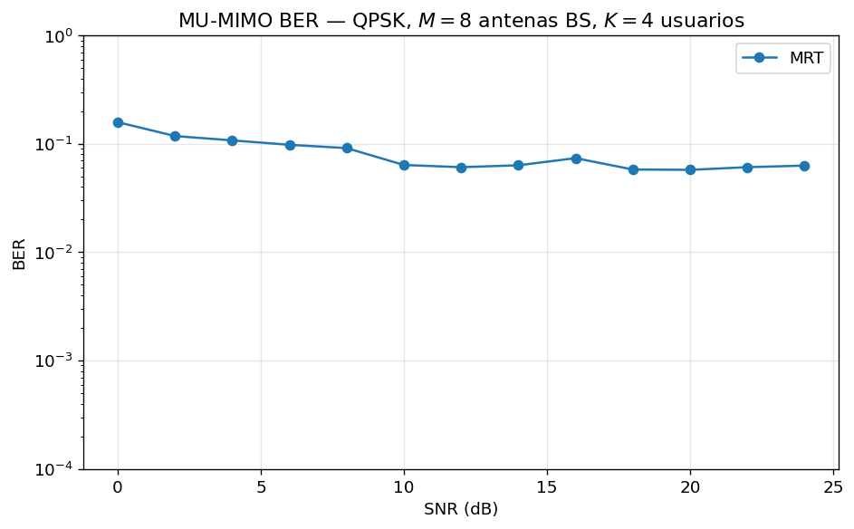

Tesis de la clase
La frase que debe sostener toda la sesion es: MIMO no se diseña contando antenas; se diseña leyendo el canal y el problema de red. Cada bloque debe volver a esa idea. Si una parte se vuelve demasiado algebraica, regresar a la pregunta operativa: "¿que decision de red sale de esta formula?".
Que el estudiante deje de ver MIMO como una formula de capacidad y lo vea como una caja de decisiones: cobertura, rank, interferencia, CSI y arquitectura.
No empezar con SVD. La SVD llega despues, como herramienta para diagnosticar si el canal permite varias capas.
"Primero cierro el enlace; despues subo el rank." Repetirla al hablar de borde de celda, DMT, rank adaptation y FR2.
Ruta sugerida de dictado
- 10 min: abrir con sintomas de red y el mapa problema -> estrategia.
- 12 min: elegir arreglos: SIMO, MISO, SU-MIMO, MU-MIMO, Massive MIMO e hibrido FR2.
- 18 min: presentar
\mathbf{H}como diagnostico operativo, no como notacion. - 12 min: contrastar diversidad, beamforming y multiplexacion usando DMT y Alamouti.
- 18 min: explicar deteccion y precodificacion: ZF, MMSE, ML, MRT, ZF/RZF.
- 12 min: rank adaptation y capacidad util, con el flujo de decision.
- 15 min: Massive MIMO como problema de pilotos, TDD, scheduler, hardening y FR2.
- 8 min: cerrar con ejercicios como mini-casos de diseño.
1. Primero el problema de red
Tiempo sugerido: 10 minEste bloque debe romper una intuicion peligrosa: "mas antenas = mas velocidad". Presentar MIMO como un presupuesto espacial. Ese presupuesto puede gastarse en robustez, direccion, capas o usuarios. La eleccion depende del sintoma.

Pizarra: que recurso escasea en cada fila
Escribir esta tabla corta y dictarla con la pregunta guia "¿que falta aqui?" — el estudiante que aprende a preguntar eso ya no necesita memorizar la tabla grande.
- Borde de celda → falta energia (SNR): concentrarla.
- Hotspot → falta separacion espacial (interferencia): gastar dimensiones en nulos.
- Indoor → falta descorrelacion (antenas juntas): mirar rank efectivo, no nominal.
- Massive sub-6 → falta CSI (pilotos): el conocimiento del canal es el cuello.
- FR2 → falta link budget y cadenas RF: el limite es hardware.
Decirlo explicito: "esta tabla es el mapa de hoy; la recorremos fila por fila". Borde de celda → bloque 4 (diversidad/DMT); hotspot → bloque 5 (precoders); indoor → bloque 3 (rank y SVD); massive → bloque 7 (TDD/pilotos); FR2 → cierre del bloque 7. Cada seccion posterior "regresa" a su fila y la tabla se aprende sola por repeticion.
Pregunta para la clase
"Si dos usuarios estan cerca angularmente y sus canales se parecen, ¿MU-MIMO ayuda o complica?" Buscar que respondan que complica: ZF tendra que forzar ortogonalidad y puede perder potencia o amplificar ruido.
Error comun que conviene corregir
No decir "MIMO aumenta capacidad" como verdad aislada. Mejor: "MIMO puede aumentar capacidad si el canal tiene modos espaciales utilizables y el sistema puede estimarlos".
2. Que arreglo de antenas usar
Tiempo sugerido: 12 minLa explicacion debe responder tres preguntas: donde estan las antenas, quien conoce el canal y que se quiere optimizar. SIMO y MISO son excelentes para introducir la diferencia entre diversidad de recepcion y beamforming de transmision. SU-MIMO y MU-MIMO ya exigen hablar de rank y separabilidad.

Explicar como "varios oidos escuchando la misma transmision". Sirve para combinar y reducir desvanecimientos, no para crear varias capas si el transmisor tiene una sola antena.
Explicar como "varias bocas coordinadas para que la onda llegue alineada". Es natural para cobertura downlink y UEs simples.
SU-MIMO exprime un UE multiantena; MU-MIMO reparte dimensiones espaciales entre usuarios. El segundo depende mucho mas del scheduler.
Pizarra: fases alineadas vs fases al azar
Dibujar un UE y dos antenas TX. Caso 1: las dos ondas llegan alineadas en fase (dos sinusoides que suman) — eso es beamforming y necesita CSI. Caso 2: fases al azar — a veces suman, a veces se cancelan. Misma geometria, distinto conocimiento del canal, distinto resultado.
Al lado, el mismo par de flechas apuntado de dos maneras. Aclarar primero: la flecha no es una antena, es un flujo de datos (una capa). Con 2 grados de libertad espaciales la BS puede empujar 2 flujos simultaneos; la decision de diseño es hacia donde apunta cada uno.
- SU-MIMO (capas): ambas flechas terminan en el mismo UE — recibe
s1ys2a la vez, doble throughput para el. Exige UE con 2+ antenas y rank 2 util. - MU-MIMO (usuarios): una flecha a cada UE — cada uno recibe 1 capa, la celda sirve 2 usuarios a la vez en el mismo recurso. Los UEs pueden ser simples (1 antena), pero los canales deben ser separables y la BS necesita CSI.
Moraleja del dibujo: misma BS, mismo espectro, mismas dimensiones espaciales — lo que cambia es a quien se asignan (concentrar vs repartir; el presupuesto del bloque 1 hecho flechas). Remate anti-confusion: "la BS puede tener 64 antenas y dibujar solo 2 flechas; la flecha es informacion, la antena es fierro". Y recalcar: las capas viajan al mismo tiempo y en la misma banda; se separan por firma espacial, no por subportadoras ni slots. Es la confusion mas comun del bloque.
3. La matriz H como diagnostico operativo
Tiempo sugerido: 18 min
La matriz \mathbf{H} debe aparecer como instrumento de medicion. En sistemas reales, el receptor o la estacion base estiman el canal con pilotos y esa estimacion alimenta rank, beamforming, precoding, deteccion y scheduling.

Como narrarlo
Primero escribir y = Hx + n y traducirlo verbalmente: "lo que recibo es una mezcla espacial de lo que transmiti, mas ruido". Luego conectar cada fila con una antena RX y cada columna con una antena TX.
Despues introducir la tabla de indicadores: rank, valores singulares, condicionamiento, producto interno entre usuarios, norma del canal y tiempo de coherencia.
Si preguntan por OFDM: hay una H[k] por subportadora; la Sesion 03 dejo canales planos y aqui la decision espacial se repite en cada uno.
Definir CSI aqui, sin dejarlo flotando: es la estimacion de H que alguien obtuvo midiendo pilotos. CSIR (el receptor conoce H) es barato y casi siempre esta. CSIT (el transmisor conoce H) es caro — feedback en FDD o reciprocidad en TDD — y caduca con el tiempo de coherencia: "CSI fresco" significa mas nuevo que la coherencia del canal. Jerarquia de exigencia: Alamouti sin CSIT < beamforming < MU-MIMO con CSI preciso y fresco. Esa exigencia creciente es la razon de ser del bloque 7.
Pizarra: la jerarquia CSIT en tres lineas
Tabla de dos columnas. ¿Que sabe el TX? → nada / hacia donde / hacia donde + hacia donde NO, de todos, ahora. ¿Como falla si el CSI se degrada? → no falla / pierde unos dB / piso de interferencia que ningun SNR arregla.
Imagen para dictarla: apuntar un haz es alumbrar con una linterna — si tiemblas, sigues alumbrando (el maximo de un haz es plano ante el error). Poner un nulo es mantener una sombra exacta sobre los ojos de otro — si tiemblas, lo encandilas (el nulo es filoso, y la fuga escala con la potencia de la señal ajena, no con el ruido). Conecta directo con la figura MRT vs ZF del bloque 5: MRT robusto pero satura; ZF exigente pero sin piso cuando el CSI es bueno.

sigma_2 es pequeña, la segunda capa existe en algebra pero sera cara en BER."
Pizarra recomendada (momento central de algebra)
- Escribir
H = [[1, 0.5], [0.5, 1]]y al ladoy = Hx + n. - Probar las direcciones naturales sin calcular SVD completa:
v1 = (1,1)/√2yv2 = (1,-1)/√2. De donde salen:v1= las dos antenas en fase — el camino cruzado SUMA al directo (1 + 0.5 = 1.5);v2= antenas en contrafase — el cruzado RESTA (1 - 0.5 = 0.5). No se derivan: se proponen por esa intuicion y se verifican multiplicando en vivo:H·v1 = 1.5·v1,H·v2 = 0.5·v2(4 numeros, irrefutable). Si preguntan por un canal no simetrico: "ahi numpy calcula la SVD; este ejemplo se eligio simetrico para verlo a mano una vez en la vida". - Contraste que le da sentido al test: probar un vector cualquiera,
H·(1,0) = (1, 0.5)— entro por una antena y salio regado por las dos: el canal lo MEZCLO. Ese es el comportamiento normal;v1yv2son las unicas direcciones que salen limpias (solo escaladas). Transmitir alineado con ellas convierte el 2x2 mezclador en dos tubos SISO independientes de ganancias 1.5 y 0.5 — eso es la SVD sin decir las palabras. - Anotar ganancias:
sigma_1^2 = 2.25contrasigma_2^2 = 0.25. La segunda capa es nueve veces mas debil. - Chequeo de energia en la misma pizarra:
||H||_F^2 = 1 + 0.25 + 0.25 + 1 = 2.5 = 2.25 + 0.25. La energia total se reparte entre modos.
Rematar con: "rank algebraico no siempre significa rank util". Dejar el canal escrito: vuelve en el bloque 5 para mostrar cuanto ruido paga ZF.
Pizarra: la tabla de indicadores son solo 3 preguntas (3+2+1)
No leer las 6 filas en orden. Dibujar H al centro y sacar tres flechas:
- ¿Cuantas capas? (mirar DENTRO de una H): rank cuenta los tuneles,
sigma_kmide el ancho de cada uno,kappacompara el mejor contra el peor. Propiedades de UN usuario; alimentan la decision de multiplexacion. - ¿Que usuarios van juntos? (mirar ENTRE usuarios): el producto interno dice cuanto se parecen dos usuarios vistos desde la BS — esto ES la P2 del bloque 1: producto cerca de 1 = "se ven iguales". La norma dice quien llega fuerte y quien necesita ayuda. Alimentan scheduler y MU-MIMO.
- ¿Cuanto dura la foto? (mirar el RELOJ): el tiempo de coherencia no mide el canal — mide la fecha de caducidad de las otras cinco filas. De ahi el costo de pilotos y la velocidad de adaptacion.
Gancho con el 2x2 recien calculado: las tres primeras filas ya tienen numeros en la pizarra — rank 2, sigma = 1.5 / 0.5, y calcular en vivo kappa = 1.5/0.5 = 3. Anunciar: "recuerden este 3: es el desbalance que en el bloque 5 se traduce en el x2.22 de ruido que paga ZF".
Metafora que continua el bloque 1: alla fueron sintomas externos (SNR, BLER); aqui llego el analisis de laboratorio (la H estimada con pilotos). Frase de dictado: "H no se mira, se interroga; estas son las seis preguntas". Y como la tabla del bloque 1, esta tambien es indice: kappa → bloque 5 (detectores), sigma_k → bloque 6 (water-filling y rank), producto interno → bloque 5 (MU-MIMO), coherencia → bloque 7 (CSI y pilotos).
4. Diversidad, beamforming y multiplexacion
Tiempo sugerido: 12 minEste bloque debe sentirse como una decision de presupuesto: si gasto dimensiones en robustez, no las gasto todas en throughput; si gasto dimensiones en capas, pierdo margen de diversidad.

Explicarlo como ejemplo de diversidad elegante: dos antenas transmiten una estructura que permite al receptor cancelar terminos cruzados. La moraleja no es el codigo en si; es que a veces conviene usar antenas para confiabilidad, no para velocidad.
Pizarra: Alamouti en cuatro lineas
- Tabla 2 ranuras x 2 antenas: ranura 1 envia
s1, s2; ranura 2 envia-s2*, s1*. - Recibido:
r1 = h1·s1 + h2·s2 + n1,r2 = -h1·s2* + h2·s1* + n2. - Combinador:
s1_hat = h1*·r1 + h2·r2*. Expandir en vivo y mostrar que los terminos cruzados se cancelan. - Resultado:
sk_hat = (|h1|^2 + |h2|^2)·sk + ruido— cada simbolo cobra ambos trayectos, sin CSIT.
Caso numerico rapido si hay tiempo: h1 = 1, h2 = j da s1_hat = 2·s1. Verificable en una linea.
Pizarra: DMT como dibujo, no como formula
Ejes: diversidad d contra multiplexacion r. Para 2x2 marcar solo tres puntos: (r=0, d=4), (r=1, d=1), (r=2, d=0), y unirlos con recta quebrada. Leerlo en voz alta: "cada capa que agrego me quita proteccion". Es la Figura 5 hecha a mano, para que quede la pendiente y no la formula.
5. Separar la mezcla: detector o precoder
Tiempo sugerido: 18 minPlantear la pregunta: si las capas o usuarios llegan mezclados, ¿quien hace el trabajo de separacion? Si el transmisor no conoce el canal, separa el receptor. Si la base conoce el canal, puede precodificar antes de transmitir.

Pizarra: cuanto ruido paga ZF (numero concreto)
- Recuperar el canal 2x2 del bloque 3. Escribir
H^H·H = [[1.25, 1], [1, 1.25]]. - Invertir en vivo: determinante
0.5625, diagonal de la inversa1.25/0.5625 ≈ 2.22. - Conclusion en una frase: ZF elimina la interferencia pero multiplica el ruido de cada flujo por 2.22. MMSE existe para no pagar eso completo.

Bueno cuando domina ruido o cuando M/K es grande. Se alinea con el usuario deseado, pero no cancela completamente interferencia.
Bueno cuando domina interferencia y los canales son separables. Malo si los usuarios tienen canales casi paralelos.
Presentarlo como el compromiso practico: cancelar interferencia sin pagar una inversion agresiva cuando el canal o el SNR no lo justifican.
Pizarra: la ecuacion del downlink con el enemigo subrayado
Escribir y_k = h_k^H·w_k·s_k + Σ_{j≠k} h_k^H·w_j·s_j + n_k y subrayar el termino de la suma. Todo el bloque se resume ahi: MRT maximiza el primer termino e ignora el subrayado; ZF anula el subrayado aunque encoja el primero; RZF negocia entre ambos segun SNR. Dejar la ecuacion escrita mientras se comenta la Figura de MRT vs ZF.
6. Rank adaptation y capacidad util
Tiempo sugerido: 12 minAqui conviene reconciliar teoria y operacion. La capacidad explica por que varias capas pueden aumentar throughput, pero el sistema real no sube rank por entusiasmo: mira SNR, BLER, valores singulares, RI, CQI, PMI e interferencia.

Pregunta rapida
"Si el sistema reporta alto SNR pero sigma_2 es muy pequeño, ¿subimos a dos capas?" La respuesta esperada es: no necesariamente; alto SNR no corrige por completo un modo espacial debil o mala condicion.
Pizarra: water-filling como recipiente
Dibujar un recipiente con un escalon por modo espacial, de altura N0/sigma_k^2: el modo fuerte es un escalon bajo, el debil uno alto. Verter "agua" hasta el nivel mu; la potencia de cada modo es el agua que queda sobre su escalon. Con las ganancias del material (sigma^2 = 52, 13, 4) los tres escalones quedan bajo el agua y water-filling gana poco frente al reparto uniforme. El mensaje operativo: si un escalon sobresale del agua, ese modo recibe cero potencia — y apagar un modo ES bajar rank.
7. Massive MIMO como problema de red
Tiempo sugerido: 15 minMassive MIMO debe explicarse como un regimen: M >> K. No es solo agregar antenas. Con muchas antenas, el canal se estabiliza y los usuarios tienden a separarse, pero aparece el costo de estimar CSI y mantener reciprocidad.


Pizarra: contaminacion de pilotos en dos celdas
Dibujar dos celdas vecinas. UE A en la celda 1 y UE B en la celda 2 usan el MISMO piloto p. Flechas de ambos llegando a la BS 1: su estimacion queda h_hat = h_A + h_B + ruido — el canal del vecino queda pegado a la estimacion. Remate: agregar antenas no limpia esto; el haz de la BS 1 apunta en parte hacia B para siempre. Por eso el diseño de pilotos y su reutilizacion entre celdas son problema de red, no de algebra.
Al lado, el contraste FDD/TDD en dos flechas: FDD baja M pilotos y sube reportes; TDD sube K pilotos y reusa por reciprocidad. El costo escala con usuarios, no con antenas.

En mmWave, no basta decir "muchas antenas". El problema es link budget, bloqueo, busqueda de haces y costo de cadenas RF. Por eso aparece beamforming hibrido.
Puente hacia el laboratorio
Presentar el notebook como una secuencia de decisiones, no como una coleccion de graficos. Cada bloque del laboratorio responde una pregunta de diseño:
- SVD y valores singulares: ¿cuantas capas son razonables?
- Capacidad: ¿cuando las antenas se vuelven throughput?
- ZF/MMSE/ML: ¿cuando vale pagar regularizacion o complejidad?
- MRT/ZF: ¿domina ruido o interferencia?
- Massive MIMO: ¿a partir de que
M/Kse estabiliza el sistema?
Cierre de clase
¿Cierra el enlace? ¿El canal tiene rank util? ¿La interferencia o el CSI hacen viable servir mas capas o usuarios?
Subir rank porque hay antenas disponibles, sin mirar BLER, SNR, valores singulares o correlacion espacial.
Usar rank bajo y beamforming para robustez; subir capas solo cuando el canal y el enlace ya lo permiten.